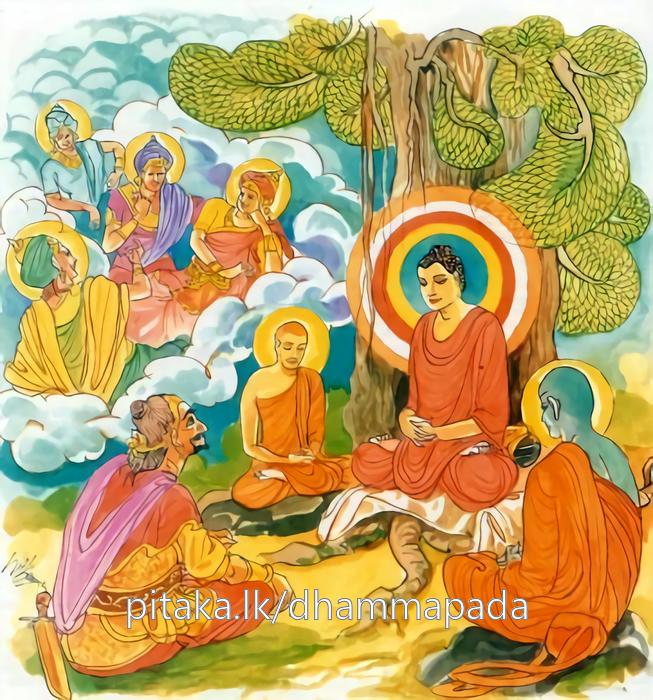

15-2 මරහු කළ නපුරු වැඩෙක්
මෙම කතාව ධම්මපද අටුවාවෙන් ද කියවන්න.
සුසුඛං වත ජීවාම යෙසං නො නත්ථි කිඤ්චනං
පීතිභක්ඛා භවිස්සාම දෙවා ආභස්සරා යථා.
ආශ්චර්ය්යයෙකි! යම් බඳු අපට රාගාදි කිසි පළිබෝධයෙක් නැද්ද, එබඳු වූ අප ඉතා සුව සේ ජීවත් වමු. ආභාස්වර බ්රහ්මයන් මෙන් ප්රීතිය ම ආහාර කොට ඇත්තෝ වම්හ.

එක් දවසක් බුදුරජානන් වහන්සේ පඤචසාල නම් බමුණු ගම් වැසි පන්සියයක් කුලකුමරියනට සෝවන්මග ලැබීමට තුබූ වාසනාගුණය දැක ඒ බමුණුගම ඇසුරු කොට එහි තැනෙක වැඩහුන් සේක. එ දවස නැකත් දවසෙක් විය. ඒ කුල කුමරියෝ එදා දිය නාන්නට ගඟට ගොස් දිය නා අබරණ ලා සැරසී ගමට එන්නට නික්ම ගත්හ. බුදුරජානන් වහන්සේ ද එ ගම් වැද පිඩු සිඟා වැඩිය සේක. පිඩු සිඟා වඩනා බුදුරජුන් දුටු වසවත් මරු බුදුරජුන්ට බත් සැන්දක් පමණකුත් නො ලැබෙන ලෙසට ගම්වැස්සන්ගේ සිරුරෙහි ආවිෂ්ට වූයේය. නැවැත සේදූ පාත්රයෙන් යුතව කිසිත් දැයක් නො ලැබ හිස් පය ගෙණ වඩනා බුදු රජුන් දැක ගම්දොර සිට “මහණ! කිම බතෙක් ලදදැ?” යි ඇසීය. බුදුරජානන් වහන්සේ “මාරය! තෝ මට බත් ලැබෙන සැටියක් කෙළෙහි දැ?” යි අසා වදාළවිට, මරු “මොහු බත් පිණිස නැවැත ගම් වද්දවා ගම් වැස්සන්ගේ සිරුරෙහි වැදී මොහුට බත් නො ලැබෙන සැටියක් කොට මොහු ඉදිරියෙහි අත්පුඩි ගසා සිනා කෙළි කරනෙමි” යි අදහස් කොට “ස්වාමීනි! නැවැතත් සිඟා වඩිනු මැනැවැ” යි කීයේය. එවේලෙහි ඒ කුලකුමරියෝද ගම් දොරට පැමිණියාහු බුදුරජුන් දැක වැඳ පසෙකට වී සිටියහ. මරු ද “කොහොම ද, ස්වාමීනි! බත් නො ලබනුයෙහි බඩසාදුකින් පෙළෙහි දැ?” යි ඇසූ කල්හි “මාරය! මම අද කිසිවක් නො ලබනුයෙම් නමුදු ආභාස්වර බ්රහ්මයන් සේ ප්රීති සුඛයෙන් කල් ගෙවන්නෙමි” යි වදාරා මේ ධර්ම දේශනාව කළ සේක.
සුසුඛං වත ජීවාම යෙසං නො නතථී කිඤ්චනං,
පීතිභක්ඛා භවිස්සාම දෙවා ආභස්සරා යථාතී.
යම් බඳු වූ අපට පළිබෝධයෙක් නැත්තේ ද (මේ අපි) එකාන්තයෙන් ඉතා සුවසේ ජීවත් වන්නෙමු. ආභාසවර දෙවියන් මෙන් ප්රීතිය ආහාර කොට ඇත්තමෝ වන්නෙමු.
සුසුඛං වත ජීවාම = එකාන්තයෙන් ඉතා සුවසේ ජීවත් වන්නෙමු.
යෙසං නො නතථි කිඤ්චනං = යම් බඳු වූ අපට පළිබෝධයෙක් නැත්තේ ද.
රාග ද්වේෂ මෝහයෝ කිඤ්චන නම් වෙත්. “තයො කිඤ්චනා රාගො කිඤ්චනං, දොසො කිඤ්චනං, මොහො කිඤ්චනං” යනු දේශනාය. රූපාදි වූ අරමුණු නිසා සත්ත්වයන් ගේ සිත්හි උපදනා රාග ද්වේෂ මෝහයන් සසර සත්ත්වයන් බැඳ තබන බැවින් පිළිබඳනා බැවින් රාගාදීක්ලේශයන් ධ්යාන විමෝක්ෂාදි ගුණයන් වළහාලන බැවින් එ කියූ ගුණයන් ලැබීමට ඉඩ නො තබන බැවින් රාග-ද්වේෂ-මෝහ කිඤ්චන නමැයි කීහ. මේ අටුවා: “රාගො උප්පජ්ජමානො සතෙත බන්ධති, පළිබන්ධති, තස්මා කිඤ්චනන්ති වුච්චති” යනු.
ප්රීතිභක්ඛා භවිසසාම දෙවා ආභස්සරා යථා = ආභාස්වර දෙවියන් මෙන් ප්රීතිය ආහාර කොට ඇත්තමෝ වන්නෙමු.
ආභස්සර නම්: ද්විතීයධ්යානය ප්රණීත වශයෙන් වඩා ධ්යානයෙන් නො ද පිරිහී කලුරිය කළවුන් උපදනා බඹලොව ය. “දුතියං ඣානං පණීතං භාවෙත්වා ආභස්සරානං දෙවානං සහව්යතං උප්පජ්ජති” යනු දන්නේ ය.
මෙහි මෙසේ උපදනා බ්රහ්මයෝ සප්රීතික ධ්යනානුභාවයෙන් පහළ වූ ස්කන්ධ ඇතියාහු මහාකල්ප අටක් සප්රීතිකධ්යානසුඛය ආහාර කොට ඇත්තාහු වෙත්. ප්රීතිය ම ආහාර කොට වසත්. ඔවුන්ගේ සිරුරෙන් වලාපටලයෙකින් නික්මෙන විදුලිකළඹක් සේ රැස් විහිදෙන බැවින් මේ බඹලොව වැස්සෝ ආභස්සර නම් වෙත්. මොවුන් ගෙණ මුන් උපදනා තැන ආභස්සර යි හඳුන්වන ලද්දේ ය. “වලාහකතො විජ්ජු විය ඉතො චිතොච ආහා සරති නිච්ඡරතිං එතෙසං සප්පීතිකජ්ඣාන නිබ්බත්ත ඛන්ධසන්තානන්ති = ආභස්සරා, දණ්ඩ උක්කා අච්චිවිය එතෙසං සරීරතො ආභාඡිජ්ජිත්වා ඡිජ්ජිත්වා පතන්ති විය සරති විසරතීති = ආභස්සරා” යනු අටුවා.
පරිත්තාභ - අප්පමාණාභ - ආභස්සර යන මේ තුන් බිම එක් ම ද්විතීයධ්යාන භූමිය යි. මුන් හැමගේ සිරුර එක් ම ආලෝක ධාරාවක් සේ ආලෝකයෙන් මුළුමනින් පැතිර ගත්තේය. සංඥාව වනාහි අවිතර්කවිචාරමාත්ර හෝ අවිතර්කඅවිචාරමාත්ර හෝ වේ.
යථා යනු නිපාතයි යොග්යතා-වීප්සා-පදාර්ත්ථනතිවෘත්ති-සාදෘශ්ය යන අරුත්හි වැටේ. මෙහි සාදෘශ්යයෙහි සිටියේ ය. ආභාස්වර දෙවියන් මෙනැ යි කීයේ එහෙයිනි. ආභාස්වරයන් හා සමානත්වය මෙයින් පැවසේ. යථාරූපං - යථාබුඩ්ඪං - යථාසත්ති යනු සෙසු අරුත් සඳහා දතයුතු ය.
ධර්මදේශනාවගේ අවසානයෙහි ඒ කුලකුමරියෝ පන්සියදෙන සෝවන්ඵලයෙහි පිහිටියහ.
මාරවස්තුව නිමි.